기상기사 (2009-07-26 기출문제)
1과목: 기상관측법
1. 관측에서 전운량이란?
- 대기 각 층의 부분운량의 합계
- 하층운의 각 층 부분운량의 합계
- 실제 하늘이 구름으로 덮여있는 부분의 양
- 대기 각 층의 부분운량의 합계를 10으로 나눈 양
(정답률: 알수없음)

2. 바람에 대한 설명 중 틀린 것은?
- 풍향은 관측시각 전 10분간의 평균이다.
- 풍속이 0.2m/s 미만일 때는 보통 정온으로 하고 풍향이 없는 것으로 간주한다.
- 풍속은 관측 시각을 중심으로 전후 10분간의 평균풍속이다.
- 풍향은 원칙적으로 장애물이 없고 평탄한 곳의 지상 10m에서의 값이다.
(정답률: 알수없음)
3. 다음 중 하층운이 아닌 것은?
- 층적운(Sc)
- 층운(St)
- 난층운(Ns)
- 적운(Cu)
(정답률: 알수없음)
4. 시정에 관한 설명 중 틀린 것은?
- 낮에 천공을 배경으로 목표물을 확인할 수 있는 최대거리이다.
- 야간에는 야음과 관계없이 낮과 같은 밝기로 했다고 가정하여 시정을 결정한다.
- 시정목표물로는 지물을 배경으로 한 밝고 빛나는 색깔의 물체를 선택한다.
- 시정은 대기의 혼탁정도를 표시하는 척도의 하나이다.
(정답률: 알수없음)
5. 10cm 파장의 Doppler 기상레이더의 시선속도가 100m/s 일 때 Doppler frequency shift는?
- 1000s-1
- 2000s-1
- 3000s-1
- 4000s-1
(정답률: 알수없음)
6. 종관기상관측에서 일반적으로 관측하고 있는 시정은?
- 방향별로 관측하여 평균치를 취한다.
- 특정방향의 시정만을 관측한다.
- 모든 방향의 시정 중에서 최소의 것을 관측한다.
- 모든 방향의 시정 중에서 최대의 것을 관측한다.
(정답률: 알수없음)
7. 강수량에 대한 설명으로 가장 옳은 것은?
- 비, 이슬비 등 액체상으로 내린 양이다.
- 액체상으로 내린 양과 눈, 싸락눈, 우박 등 고체상으로 내린 양을 포함한다.
- 액체상이나 고체상으로 내린 양과 이슬이나 서리로 맺힌 양을 포함한다.
- 강수량은 강우량과 적설량의 합계이다.
(정답률: 알수없음)
8. 기상위성인 GMS의 주요 기능이 아닌 것은?
- 가시광선 및 적외선 주사 방사
- 기상자료의 수집
- 위성자료의 송신
- 기상 상태의 분석 및 예보
(정답률: 알수없음)
9. 수은 기압계에 관한 설명 중 틀린 것은?
- 기차보정량은 온도와 기압에 따라 변한다.
- 온도보정은 0℃의 상태로 환원하기 위한 것이다.
- 중력보정은 표준중력 가속도와 관측소의 실제 중력가속도가 다르기 때문에 필요하다.
- 해면갱정은 여러 관측소의 기압차를 비교하기 위하여 같은 기준면의 기압으로 환원하는 것이다.
(정답률: 알수없음)
10. 고도별 바람 방향과 세기를 표현한 것은?
- 호도그래프(Hodograph)
- 노모그래프(Nomograph)
- 단열선도(Skew T-Log P diagram)
- 풍배도(Wind-Rose)
(정답률: 알수없음)
11. 대기의 전기 현상을 나타내는 기호가 틀린 것은?
- 뇌전 -
- 천둥 -
- 극광 -
- 세인트 엘모의 불 -
(정답률: 알수없음)
12. 통풍건습계로 습도 관측 시 오차 발생의 주요 원인이 될 수 없는 것은?
- 각 온도계의 기차(index error)
- 각 온도계의 설치각도
- 통풍시간
- 습구의 청결 상태
(정답률: 알수없음)
13. 대형 증발계에서 시침으로 읽은 값은 수온과 수위측정기의 온도가 몇 도일 때로 보정되어야 하는가?
- 4℃
- 10℃
- 15℃
- 24℃
(정답률: 알수없음)
14. 알베도 메터(Albedometer)로 측정하는 것은?
- 표면의 장력(surface tension)
- 표면의 흡수력(absorbing power)
- 표면의 거칠기(roughness)
- 표면의 반사력(reflecting power)
(정답률: 알수없음)
15. 정지기상위성이 아닌 것은?
- GMS
- SMS
- GOES
- NIMBUS
(정답률: 알수없음)
16. 종관 지상 관측에서 표준시각 정시에 관측하는 요소는?
- 기온
- 기압
- 습도
- 바람
(정답률: 알수없음)
17. 전도형 우량계(tipping-bucket rain gauge)의 설명으로 틀린 것은?
- 2개의 전도되로 한쪽이 일정량의 물이 고이면 그의 무게로 넘어지고 다른 쪽의 전도되가 교대로 측정하는 원리이다.
- 많은 양의 강수를 측정할 때 오차가 커지는 단점이 있다.
- 전도형 울야계는 일반형, 온수식, 일수식의 3종류가 있다.
- 사이펀 원리를 이용하여 저수형으로 측정하고 있다.
(정답률: 알수없음)
18. 기상관측 요소와 단위의 관계가 틀린 것은?
- 강수량-mm
- 기압-hPa
- 일사량-cal/cm2day
- 증발량-g
(정답률: 알수없음)
19. 기상위성의 궤도운동에 대한 설명으로 틀린 것은?
- 비균질한 지구 중력장의 영향으로 궤도에 섭동(perturbation)이 발생한다.
- 위성의 궤도에는 극궤도와 정지궤도 등이 있다.
- 정지궤도란 말 그대로 위성이 정지해 있는 궤도를 의미한다.
- 극궤도 기상위성의 공전주기는 일반적으로 약 104분이다.
(정답률: 알수없음)
20. 기상위성자료의 가장 큰 장점은?
- 접근이 곤란하거나 거의 불가능한 지역에 대해 준실시간으로 관측자료를 제공한다.
- 센서 및 컴퓨터의 발달로 관측 자료의 정확도가 높다.
- 다른 관측자료에 비해 처리과정이 단순하다.
- 기상위성자료는 위성이 자주 교체되기 때문에 일관성이 없다.
(정답률: 알수없음)
2과목: 대기열역학
21. 다음 중 비가역인것은?
- 단열과정
- 위단열과정
- 등온위과정
- 등엔트로피과정
(정답률: 알수없음)
22. 습윤 공기의 단열기온감율은? (단, 850hPa, 10℃를 기준으로 한다.)
- 약 1.2℃/100m
- 약 1.0℃/100m
- 약 0.5℃/100m
- 약 0.1℃/100m
(정답률: 알수없음)
23. 굴뚝연기가 그림 A와 같이 퍼지고 있다. 이 때 그림 B에서 기온의 연직분포를 나타내는 곡선은?
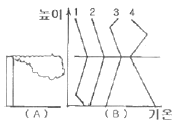
- 1
- 2
- 3
- 4
(정답률: 알수없음)
24. 다음 중 층후(thickness)를 옳게 나타낸 색은? (단, p는 기압, R은 건조공기기체상수, g는 중력상수,
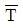
는 층후온도)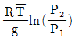
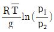
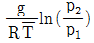
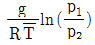
(정답률: 알수없음)
25. 단열선도에 기입된 상태곡선을 볼 때, 대기의 안정도는?
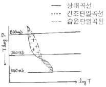
- 위장재불안정
- 잠재불안정
- 절대불안정
- 절대안정
(정답률: 알수없음)
26. 어느 습윤공기덩이의 건조공기만의 분자량을 Md, 수증기만의 분자량을 Mw, 수증기압을 e, 대기압을 p라고 한다면 그 공기덩이의 혼합비는?
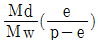
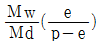
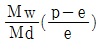
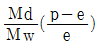
(정답률: 알수없음)
27. 고립계에서 엔트로피의 변화가 없는 과정은?
- 등압과정
- 비가역과정
- 응결과정
- 단열과정
(정답률: 알수없음)
28. 불포화상태가 유지되는 공기덩어리가 단열운동을 하고 있을 때 이 공기의 온위는?
- 상승할 때 높아진다.
- 하강할 때 높아진다.
- 일정하다.
- 불규칙해진다.
(정답률: 알수없음)
29. 건조단열기온감율을 옳게 나타낸 식은? (단, g는 중력가속도, Cp는 정압비열이다.)
- g/Cp
- Cp/g
- Cp × g
- Cp + g
(정답률: 알수없음)
30. 건조공기에 대하여 정적비열에 대한 정압비열의 비 Cp/Cv를 계산하면 그 값은?
- 약 0.286
- 약 0.714
- 약 1.4
- 약 1.7
(정답률: 알수없음)
31. 건조단열감율 Γd과 포화단열감율 Γs을 비교할 때 옳은 것은?
- 항상 Γd가 Γs보다 크다.
- 항상 Γs가 Γd보다 크다.
- 항상 Γd가 Γs가 같다.
- Γd가 Γs보다 클 때도 있고 더 작을 때도 있다.
(정답률: 알수없음)
32. Clapeyron 선도로부터 등면적 변환으로 얻을 수 없는 선도는?
- Tephigram
- Emagram
- Refsdal 선도
- Stuve 선도
(정답률: 알수없음)
33. 등적과정에서 온도가 10℃인 1kg의 공기가 20℃로 가열되는데 필요한 열량은? (단, 공기의 등적비열은 717JK-1kg-1이다.)
- 717cal
- 1710cal
- 3011cal
- 17208cal
(정답률: 알수없음)
34. 수증기압에 대한 설명 중 틀린 것은?
- 수증기가 공기와 함께 포함되어 있을 때 수증기에 의한 부분압이다.
- 수증기가 기체 상태로 남아 있을 수 있는 양의 상한은 한정되어 있으며 이것이 포화수증기압이다.
- 포화수증기압은 온도와 압력의 함수이다.
- 포화수증기압은 Clausius-Clapeyron 방정식에 의해 주어진다.
(정답률: 알수없음)
35. 한 축이 압력(p)이고, 다른 한 축이 부피(v)인 단열선도의 명칭은?
- Clapeyron 선도
- Tephigram
- Emagram
- Stuve 선도
(정답률: 알수없음)
36. 주의의 기온감율을 Γ, 건조단열감율을 Γd라 할 때, Γ＞Γd인 경우, 다음 중 일어나기 어려운 현상은?
- 대류
- 안개
- 적란운
- 천둥번개
(정답률: 알수없음)
37. 수증기의 분자량을 Mv, 건조공기의 분자량을 Md로 놓을 때 Mv/Md는?
- 0.622
- 0.717
- 1.033
- 8.314
(정답률: 알수없음)
38. P는 압력, V는 부피라 할 때 내부에너지(U)와 엔탈피(H)사이의 식은?
- H = U + P·V
- H = U - P·V
- H = -U + P·V
- H = -U -P·V
(정답률: 알수없음)
39. 대류권에서 습윤단열기온감율(W)과 건조단열기온감율(D)의 관계식으로 옳은것은?
- W＞D
- W = D
- W＜D
- W = D = 0
(정답률: 알수없음)
40. 기온이 273K인 어떤 공기덩이를 압력을 일정하게 유지시키면서 그 체적을 2배로 팽창시키면 기온은?
- 273K
- 546K
- 819K
- 1092K
(정답률: 알수없음)
3과목: 대기운동학
41. 관성류(inertial flow)의 설명 중 틀린 것은?
- 원운동을 하며 이 원의 반경을 관성반경이라 한다.
- 북반구에서 항상 고기압성 운동을 한다.
- 주기는 반진자일과 같다.
- 기압경도력과 원심령이 평형을 이룬다.
(정답률: 알수없음)
42. 온도풍(thermal wind)에 대한 설명으로 옳은 것은?
- 두 층의 바람 벡터의 차
- 두 층의 지균풍의 벡터 차
- 고온에서 저온으로 부는 바람
- 두 층의 바람 크기의 차
(정답률: 알수없음)
43. 지오포텐샬(geopotential)의 설명으로 가장 적절한 것은?
- 해면으로부터 어느 일정한 높이까지의 거리를 나타내는 단위이다.
- 지표에서 어느 일정한 높이까지 물체를 올리는데 필요한 일의 양이다.
- 지표로부터 어느 일정한 높이까지의 높이를 말한다.
- 해면에서 어느 일정한 높이까지 단위 질량의 물체를 올리는데 필요한 일의 양이다.
(정답률: 알수없음)
44. 비교적 높은 장애물이 있는 지표층의 장애물 높이 이하의 층은?
- 혼합층
- 캐노피층
- 대기경계층
- 내부경계층
(정답률: 알수없음)
45. 지면마찰에 기인한 하층공기의 수렴이 발생하여 그 상단을 통하여 내부 영역의 상대 소용돌이도에 비례하는 연직류가 발생하는 현상은?
- 상대수렴
- 절대수렴
- 회전수렴
- 에크만수렴
(정답률: 알수없음)
46. 마찰이 없는 상태에서 기압장이 수평적으로 균일하여 기압경도력이 없는 경우에 일어나는 바람은?
- 관성풍
- 지균풍
- 선형풍
- 경도풍
(정답률: 알수없음)
47. 그림의 두 판 사이에 유체가 있다. 이 유체가 받는 단위 면적당 점성력을 표현한 것은?
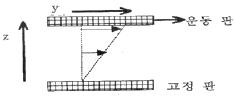
- τzz
- τxx
- τyy
- τzy
(정답률: 알수없음)
48. 대상 운동에너지가 대상 유효위치에너지로 전환되는 순환세포는?
- Hadley 세포
- Ferrel 세포
- Polar 세포
- 적도 세포
(정답률: 알수없음)
49. 원형의 등압선을 갖는 고기압과 저기압의 특성 설명 중 틀린 것은?
- 지면마찰이 없다면 공기는 수평면 내에서 원운동을 한다.
- 마찰의 영향으로 바람은 등압선을 가로질러 흐른다.
- 지면마찰의 영향으로 저기압에서는 수렴하는 기류가 상승하므로 날씨가 악화된다.
- 지상저기압의 중심 부근에서는 상층지 수렴이 계속된다.
(정답률: 알수없음)
50. 다음 중 기압좌표계로 표현된 기압경도력은? (p는밀도, P는기압, ø는geopotential)
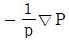
- -▽ø
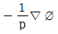
- -p▽P
(정답률: 알수없음)
51. 상대와도(ξ)와 순환(C)의 관계를 적절하게 표현한 식은? (A는 순환이 일어나는 임의 폐곡선의 면적이다.)
- ξ = AC
- ξ = C/A
- ξC = A
- ξC/A 상수
(정답률: 알수없음)
52. 중위도 종관규모에서 절대와도 변화율에 가장 큰 영향을 미칠 수 있는 항은?
- 발산항
- Tilting항
- Solenoidal항
- 마찰항
(정답률: 알수없음)
53. 풍속장(Wind field)을 아래 그림과 같이 유선으로 나타내었을 때 다음 중 어느 것과 가장 관계가 깊은가?
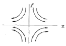
- 병진 운동(translation)
- 와도(vorticity)
- 변형(deformation)
- 발산(divergence)
(정답률: 알수없음)
54. 다음 중 beta 인자 β=df/dy한 옳은 표현은?
- β는 남반구에서 -값, 북반구에서 +값을 갖는다.
- β는 고위도로 갈수록 큰 값을 갖는다.
- β는 지구 어디에서나 양의 값을 갖는다.
- β는 적도를 중심으로 남북 대칭 값을 갖는다.
(정답률: 알수없음)
55. 다음 중 지상일기도에서 등압선과 풍향이 이루는 각이 가장 큰 곳은?
- 잔잔한 바다
- 눈 덮인 빙설원
- 평평한 사막
- 나무 많은 산악지
(정답률: 알수없음)
56. 대기경계층의 특성이 아닌 것은?
- 지면 마찰의 영향이 크다.
- 난류 발생이 빈번하다.
- 혼합층이 종종 존재한다.
- 지균풍이 분다.
(정답률: 알수없음)
57. 다음 중 동서방향 순환은?
- 극세포 순환
- 페렐 순환
- 해들리 순환
- 워커 순환
(정답률: 알수없음)
58. 북위 30도에 위치한 어떤 공기덩이가 5.0×10-5/s의 절대소용돌이도를 가지고 있다. 공기덩이가 절대소용돌이도를 보존하면서 북위 90도로 이동하였을 때 갖게 되는 상대소용돌이도는? (단, 북극에서 지구자전에 의한 행성소용돌이도는 1.4×10-4/s)
- 3.6×10-5/s
- -7.2×10-5/s
- 19.0×10-5/s
- -9.0×10-5/s
(정답률: 알수없음)
59. 등압면좌표계(x, y, p)에서 대기의 정적 안정도를 표시하는 매개변수를 나타낸 식은? (단, θ는 온위, T는 기온, p는 기압, R은 기체상수, Cp는 정압비열을 표시한다.)
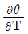
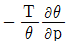
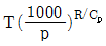
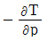
(정답률: 알수없음)
60. 종관규모의 운동에서 연직 P - 속도(ω)의 근사값으로 가장 적합한 식은? (단, p는 기압, v는 속도벡터, W는 연직속도, t는 시간, ρ는 공기밀도, g는 중력가속도)
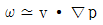
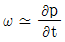
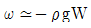
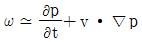
(정답률: 알수없음)
4과목: 기후학
61. 클라이모그래프(Climograph)의 요소는?
- 습구온도와 상대습도
- 습구온도와 건구온도
- 습구온도와 풍속
- 습구온도와 우량
(정답률: 알수없음)
62. 우리 나라의 여름기후에 대한 설명 중 틀린 것은?
- 기압배치는 대체로 남고북저형이다.
- 북태평향 기단의 영향으로 고온 건조한 날씨가 된다.
- 태풍의 내습으로 인한 피해가 종종 있다.
- 연중 가장 강수량이 많은 계절이다.
(정답률: 알수없음)
63. 열대우림기후(Koppen 구분에서의 Af 및 Am)의 특색에 대한 내용으로 적합하지 않은 것은?
- 연중 고온으로 연평균 기온이 대륙내부에선 27℃ 이상이다.
- 기온의 일교차가 연교차와 같이 매우 작다.
- 적도 저압대가 주로 위치하는 지역이다.
- 거의 매일 스콜(squall)이 내린다.
(정답률: 알수없음)
64. 해면 기압의 전 지구 분포에 관한 설명 중 옳은 것은?
- 북태평양의 알류산 저기압은 여름철에 발달한다.
- 아열대 고기압대의 형성은 주로 열적인 원인이다.
- 북반구 아열대 고기압은 겨울철보다 여름철에 강화된다.
- 적도지방에는 기온이 높아 별로 발달되지 않은 고기압대가 있다.
(정답률: 알수없음)
65. 다음 중 사막화의 특징이 아닌 것은?
- 가뭄과 홍수가 반복되는 과정을 거치면서 진행된다.
- 사헬(Sahel)은 사막화가 가장 활발하게 진행되는 지역중의 한 곳이다.
- 인간활동과 직접적인 연관성은 없다.
- 알베도의 증가와 잠열속(latent heat flux)의 감소에 따른 지면 온도의 상승과 관련이 있다.
(정답률: 알수없음)
66. 기후인자라고 볼 수 없는 것은?
- 위도
- 해발고도
- 일사량
- 지형
(정답률: 알수없음)
67. 쾨펜(Koppen)의 기후구분 특성과 가장 거리가 먼 것은?
- 자연식생
- 기온과 강수량
- 수분효율
- 바다와 육지의 분포
(정답률: 알수없음)
68. 쾨펜의 기후구분 중 일부를 그림으로 표시하였다. 그림에서 ①로 표시되는 기후형태는? (단, 최한월의 평균기온은 18℃ 이상이다.)
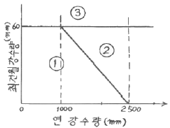
- Aw
- Af
- Cw
- Cf
(정답률: 알수없음)
69. 과거의 기후를 추정하는데 있어 가장 관계가 적은 것은?
- 단층
- 화석
- 고토양
- 호상점토
(정답률: 알수없음)
70. 세로축에 월평균 기온, 가로축에 월 강수량을 잡아 월별 분포를 그래프로 나타내어 체감기후를 판단한 것은?
- 하이더 그래프
- 풍배도
- 모노그래프
- 실효온도계산 그래프
(정답률: 알수없음)
71. 하루 중 상대습도가 가장 높을 때는?
- 아침
- 낮
- 저녁
- 밤
(정답률: 알수없음)
72. 대기의 온실효과에 주된 역할을 하는 대기중의 성분은?
- 산소
- 질소
- 이산화탄소
- 수증기
(정답률: 알수없음)
73. 다음 저기압계 중 1년을 통하여 그 위치가 거의 변하지 않는 것은?
- 아시아 대륙 중앙에 형성되는 저기압
- 알류산 열도부근에 위치한 저기압
- 양자강 부근에서 형성되는 저기압
- 적도부근에 생기는 저기압
(정답률: 알수없음)
74. 다음 그림과 같은 월별 강수량의 특징을 보이는 기후형은?
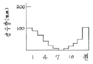
- 한대기후형
- 온대기후형
- 몬순기후형
- 지중해기후형
(정답률: 알수없음)
75. 연평균 강수량이 1000mm이고 연평균 기온이 20℃라면 이 지역의 우량인자는?
- 2
- 5
- 20
- 50
(정답률: 알수없음)
76. 여름철 열적도(thermal equator)의 위치로 적절하지 못한 것은?
- 사하라 사막
- 아라비아 반도
- 페루 해안
- 태평양 북위 10도 해상
(정답률: 알수없음)
77. 정상적인 기후체계는 외적강화요인과 내적복사강화요인, 인간활동에 의한 변화 그리고 피드백 효과 등의 복합적인 작용에 의해 이루어진다. 이 중 내적복사강화요인에 해당하는 것은?
- 천문학적 요인
- 대기조성
- 태양변화
- 지반운동
(정답률: 알수없음)
78. 지구 생성 초기의 원시 대기의 주된 구성 기체는?
- 질소와 산소
- 메탄과 이산화탄소
- 산소와 수증기
- 수증기와 이산화탄소
(정답률: 알수없음)
79. 다음 기후 아시스템(subsystem) 중 열적 관성(therman inertia)이 가장 짧은 것은?
- 대기권
- 수권
- 빙권
- 생권
(정답률: 알수없음)
80. 다음 중 주기가 가장 긴 변동은?
- intra-seasonal oscillation
- inter-decadal oscillation
- El Nino
- annual cycle
(정답률: 알수없음)
5과목: 일기분석 및 예보론
81. 500hPa 일기도에서 이상 기상현상이 나타날 때의 등지오포텐셜 고도의 분포 상태는?
- Zonal 형
- Meander 형
- 조밀
- 완만
(정답률: 알수없음)
82. 위도에 따른 권계면 고도가 가장 높은 곳은?
- 저위도 상공
- 중위도 상공
- 고위도 상공
- 극지방 상공
(정답률: 알수없음)
83. 1000 ~ 500 hPa 층후층의 특징이 아닌 것은?
- 700hPa의 온도분포와 비슷하다.
- 지상전선의 한기쪽에 등층후선이 조밀하다.
- 대기 하층의 기온분포와 관계없다.
- 층후선이 조밀한 곳에 강풍대가 위치한다.
(정답률: 알수없음)
84. Showalter의 안정도 지수는 850hPa의 공기를 어느 고도까지 상승시켜 구하는가?
- 600hPa
- 700hPa
- 500hPa
- 300hPa
(정답률: 알수없음)
85. 북반구 저기압 중심 부근에서의 경도풍 설명으로 옳은 것은?
- 바람방향이 등압선과 경사를 이루고 마찰력과 평형을 이루고 있는 경우
- 원심력이 수평기압 경도력과 Coriolis힘을 합한 것과 평형을 이루는 경우
- 수평기압 경도력이 Coriolis힘과 원심력을 합한 것과 평형을 이루는 경우
- Coriolis힘이 수평기압 경도력과 원심력을 합한 것과 평형을 이루는 경우
(정답률: 알수없음)
86. 영동지방에서 대설의 원인이 되는 기압배치는?
- cPk기단이 만주와 연해주를 거쳐서 동해로 확장할 때
- cPk기단이 남고 북저형일 때
- mPw기단이 쇠약될 때
- cEw기단이 북상할 때
(정답률: 알수없음)
87. 다음 중 전선발생이 가장 잘 일어나는 지면 부근의 대기운동은?
- 순환
- 변형
- 발산
- 전이
(정답률: 알수없음)
88. 상층기압골이 서쪽으로부터 지상저기압 위로 다가오면 지상 저기압은?
- 소멸된다
- 강도는 그대로 지속된다.
- 약화된다.
- 발달한다.
(정답률: 알수없음)
89. 스케일고도(Scale Height)의 값으로 가장 옳은 것은?
- 기압이 해면값의 약 37% 되는 높이
- 기압이 해면값의 약 47% 되는 높이
- 기압이 해면값의 약 57% 되는 높이
- 기압이 해면값의 약 97% 되는 높이
(정답률: 알수없음)
90. 대기의 난류(turbulent flow)에 대한 설명 중 옳은 것은?
- 수평차원(scale)이 수백 m ~ 수 km이다.
- 지속시간은 1시간 이상의 크기이다.
- 상승부분에서 일어나는 응결을 통해 발생한다.
- 열 및 습기를 수송하는 데 대단히 효과적이다.
(정답률: 알수없음)
91. 국제기상전보식에서 Nddff군의 ff는?
- 전운량
- 운형
- 풍향
- 풍속
(정답률: 알수없음)
92. 온난전선의 일반적인 특성이 아닌 것은?
- 전선 후방에서는 풍향이 보통 남서풍이고 전방에서는 남동풍이다.
- 온난전선은 보통 저기압의 서쪽에 위치한다.
- 구름이 상층운으로부터 서서히 낮아져서 지속적인 비가 내리는 곳의 후방에 해당한다.
- 안개가 넓은 범위에 끼어있는 곳에 위치한다.
(정답률: 알수없음)
93. 온대저기압의 발생과 제일 밀접한 관계가 있는 것은?
- 편서풍파동
- 무역풍파동
- 해들리 순환
- 극편동풍
(정답률: 알수없음)
94. 쇼월터 안정도 지수(showalter stability index)는 어느것을 이용하면 가장 쉽게 구할 수 있는가?
- 지상일기도
- 고층일기도
- 층후선도
- 대기선도
(정답률: 알수없음)
95. 해륙풍에 관한 설명 중 틀린 것은?
- 해풍은 오후에 가장 강하다.
- 해풍은 육풍보다 일반적으로 강하다.
- 기압계에 상관없이 해안지방에서 발생한다.
- 해풍은 전향력의 영향을 받는다.
(정답률: 알수없음)
96. 강수현상이 일어나지 않는다고 할 수 있는 것은?
- 고기압권내
- 전선대
- 저기압권내
- 기압골
(정답률: 알수없음)
97. 제트기류에 관한 설명 중 틀린 것은?
- 대류권과 성층권의 경계 부근에 위치하며, 출현 고도의 높이는 여름철에 높고 겨울철에 낮다.
- 제트기류는 대기의 습도 차이로 발생하며 사행한다.
- 북위 30도 부근 고도 약 12km에 나타나는 아열대 제트기류와 북위 40도 부근 고도 약 9km에 나타나는 한 대 제트기류가 있다.
- 제트코어의 북쪽에서는 저기압성 회전, 남쪽에서는 고기압성 순환이 일어난다.
(정답률: 알수없음)
98. 다음 고층 관측자료에서 숫자 5.0이 의미하는 것은?
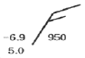
- 기온
- 고도
- 습수
- 노점온도
(정답률: 알수없음)
99. 종관규모 운동에서 연직 속도의 규모는?
- 1cn·sec-1
- 10cn·sec-1
- 10-2cn·sec-1
- 102cn·sec-1
(정답률: 알수없음)
100. 수직류 분포를 분석하는데 많이 쓰이는 등압면 일기도는?
- 300hPa
- 500hPa
- 700hPa
- 850hPa
(정답률: 알수없음)